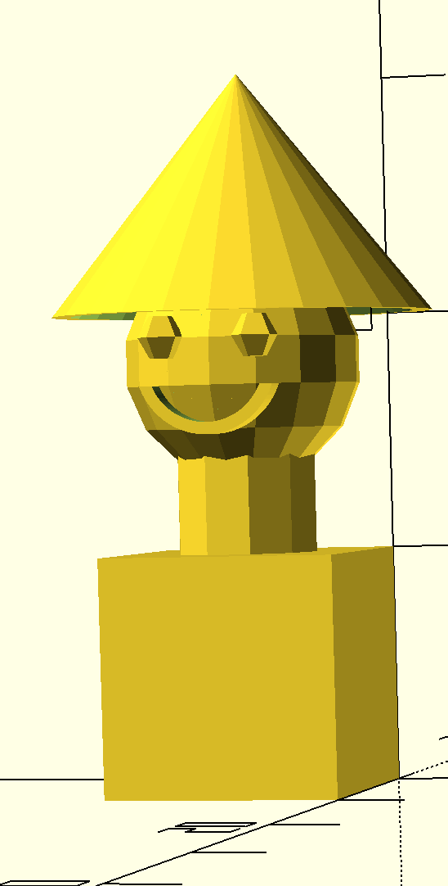
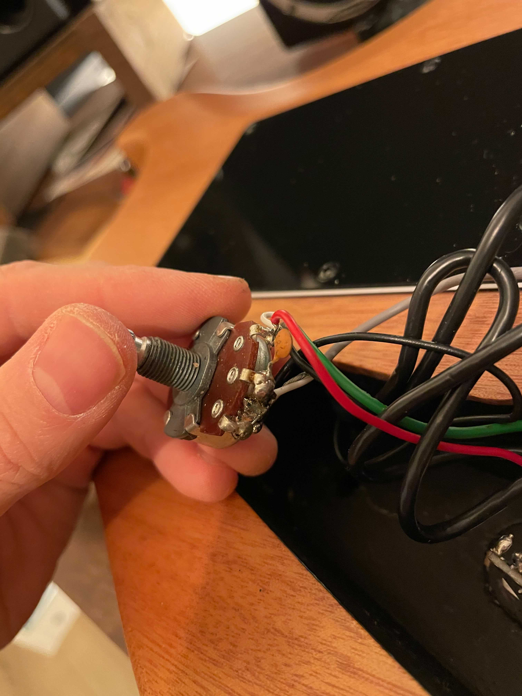

layout: true class: inverse,middle,center --- # #trh-duppedingsar --- <img src="https://p196.p4.n0.cdn.getcloudapp.com/items/YEuO12d0/f7caa86b-cc43-425b-b69f-095df1ab4649.jpg?source=viewer&v=7f09544da5841b5b9f2b0862eb45867f"> --- # Hva er en duppedings? ### _"En fysisk og (delvis) digital gjenstand som er gøy å hacke på"_ ??? - En definisjon som ble foreslått i faggruppa som flere likte Faggruppa omhandler - fysiske og delvis digitale ting som er gøy å hacke på - alt det som måtte følge med - hw - software - 3d-modellereing - elektrisitet - m.m. --- # Hvem er vi? <img src="https://p196.p4.n0.cdn.getcloudapp.com/items/6quY5lOo/98e8ab78-43b5-44a4-b03d-a8fb0898c5ae.jpg?source=viewer&v=b7c47000fb334151c4a98afce1b627f0" style="height: 40vh"/> ??? - Veldig bra gjeng - Folk med ekspertise vidt forskjellige områder --- # Mål for året --- # Valgfritt prosjekt .box[ ### - Magic mirror ### - Sjakklokke ### - Custom nexa-controller ### - LED-array i stua ### - Temperaturovervåking til ølbrygging ### - Digital effektpedal til gitar ] ??? - Startet året med et valgfritt duppedingsprosjekt - Per person eller en mindre gruppe - Har jobbet med i faggruppemøter, arbeidstid - ..og noen på fritid - Som har fulgt oss gjennom året --- # Kjøpt inn masse Raspberry PIs ++ --- # Custom Nexa-controller i stua <div class="grid"> <video src="2.mov" width="80%" autoplay loop volume=0></video> <video src="3.mov" width="80%"autoplay loop volume=0 playbackRate=2></video> </div> --- # Sjakklokke med custom kretskort <div class="grid"> </div> --- # Magic mirrors <div class="grid"> </div> --- # LED-array i stua <div class="grid"> <video src="1.mov" width="100%" autoplay loop volume=0></video> </div> --- # Digital effektpedal til gitar <div class="grid"> </div> --- # Faggruppemøter .box[ ### - Jobbing med eget prosjekt ### - Strøm 101 ### - PegasusProject ### - 3D-printing ### - Bygg din egen Arduino ### - Digital signalprossessering og effektpedal ### - Sikkerhet i IoT ### - Hackheim ### - Mer jobbing med get prosjekt ] --- # Hvorfor #trh-duppedingsar? .box[ ### - Noe helt annet ### - Lære noe nytt ### - Spennende temaer ### - Avbrekk fra hverdagen ### - Jobbe med og lage noe fysisk ] # ### _"Ordentlig fullstack!"_ ??? - Faggruppa: 10% av tida, i arbeidstid, som du selv kan påvirke til å handle om det du vil - Er det relevant for arbeidshverdagen? - Motivasjon, Tankemønstre, Framtidige prosjekter - Motivasjon - det å få drive med noe annet i faggruppa kan motivere oss til å trives enda bedre i prosjektet, og derfor yte enda mer - Tankemønstre - det å lære noe helt nytt kan ofte gi oss tankemønstre som vi kan ta med oss i det daglige - Framtidige prosjekter - hvem vet hvilke prosjekter vi har om 3 år? Det blir ikke akkurat mindre av IoT om dagen --- # Masse aktivitet! ### Både i og mellom faggruppemøter --- # Bygg din egen arduino ### Faggruppedag <div class="grid"> </div> --- # Kurs i elektronikk 101 ### Faggruppemøte --- # 3d-modellering ### Faggruppemøte <div class="grid">  </div> --- # 3d-printing ### Eget insj --- # Pulley til klatreskade ### Eget insj <div class="grid"> </div> --- # Modding av cnc-maskin ### Eget insj <div class="grid"> </div> --- # Sustainpedal til midikeyboard ### Eget insj --- # Reparert robotstøvsuger ### Eget insj --- # Reparert gitar ### Eget insj <div class="grid">  </div> --- # Bygd PC ### Eget insj <div class="grid"> </div> --- # Ser noe av dette interessant ut? ### Da kan denne faggruppa være noe deg. --- # Effektpedal gitar: detaljer